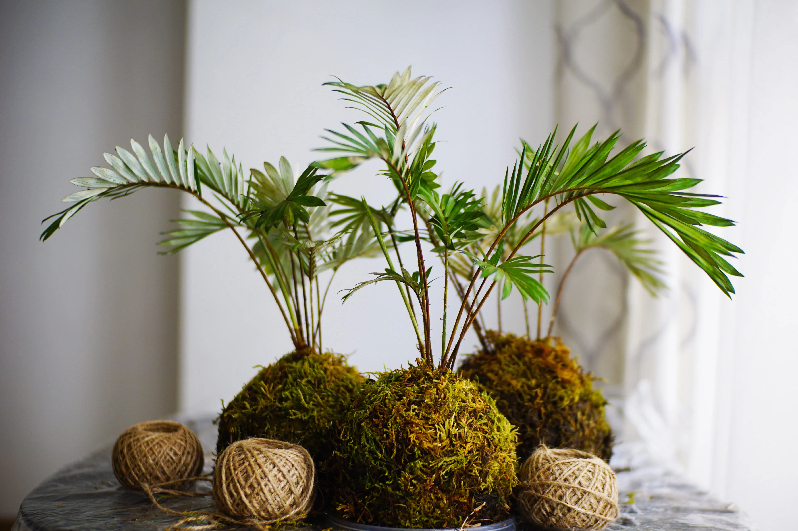

¿Qué es una kokedama?
Usualmente se dice que la Kokedama es la descendiente directa del Bonsai, y hay mucha verdad en ello, pues ambas técnicas comparten muchas características. Sobre todo, tienen en común que en ambos casos las plantas crecen en frondosidad pero no en tamaño. Pero la Kokedama es mucho más sencilla de realizar y a la vez, tiene un mantenimiento bastante más relajado. Por eso, a diferencia del Bonsái, cualquiera puede hacer su propia “bola de musgo” en casa. Kokedama viene de dos palabras en japonés: Koke, que significa “musgo“, y Dama, que significa “bola“, y es precisamente eso, es un arte que consiste en encerrar plantas de crecimiento lento en bolas de sustrato y musgo para que puedan desarrollarse sin maceta. Como te comentábamos en la introducción de este artículo, el arte de las kokedamas llega realizándose en Japón desde hace más de 500 años y no es sólo por su belleza, ya que, según cuentan sus practicantes, les ayuda a tener una casa que esté más en contacto con la naturaleza, además de tener muchos beneficios al ser una actividad muy relajante, llegando a afirmar que tiene componentes muy beneficiosos para la actividad cerebral. El catálogo de plantas con las que puedes hacer un kokedama es muy amplio, pero desde aquí te recomendamos que sean plantas de crecimiento lento y que necesiten un aporte de humedad constante para que el kokedama aguante el máximo tiempo posible. Por ello no te recomendamos que utilices cactus o plantas crasas para hacer un kokedama ya que, aunque es una especie de crecimiento lento, tendrás seguramente problemas de pudriciones ya que la bola de musgo mantiene muy bien la humedad. Por otro lado, tampoco te recomendamos otras especies que sí que se llevan bien con la humedad, tales como los kalanchoes, ya que su crecimiento más elevado tanto en sus ramas como en sus raíces hará que necesites rehacer el kokedama cada poco tiempo.

Algunos consejos para cuidar tu kokedama
El principal cuidado del kokedama es el riego que, aunque depende del tipo de planta, época del año y la exposición, si tenemos en cuenta una planta con unas necesidades de agua normales y que el kokedama estará viviendo en el interior de la casa, te recomendamos que lo riegues una vez cada dos semanas en invierno, y una vez a la semana en verano. Para el proceso del riego lo tienes muy sencillo: Siempre usa la técnica de la inmersión. Introduce la bola de musgo o fibra de coco en agua más o menos hasta la mitad de la bola. La dejas durante unos 10 minutos. Posteriormente la dejas escurrir (¡nunca la aprietes para escurrir el agua!). La vuelves a depositar o a colgar donde estaba. Sobre todo si vives en un clima seco o en un lugar con mucho calor, puedes rociar la planta y la bola de fibra con agua a través de un spray. De este modo mantendrás más tiempo la humedad de la planta.